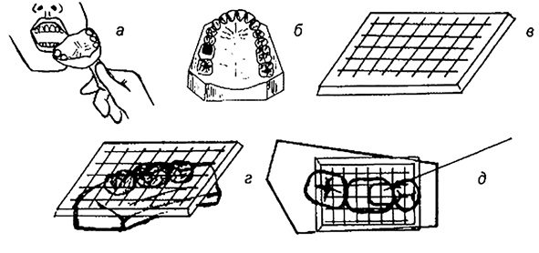
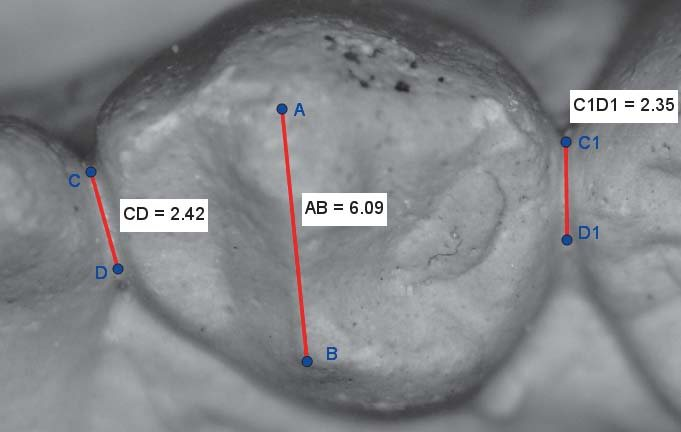
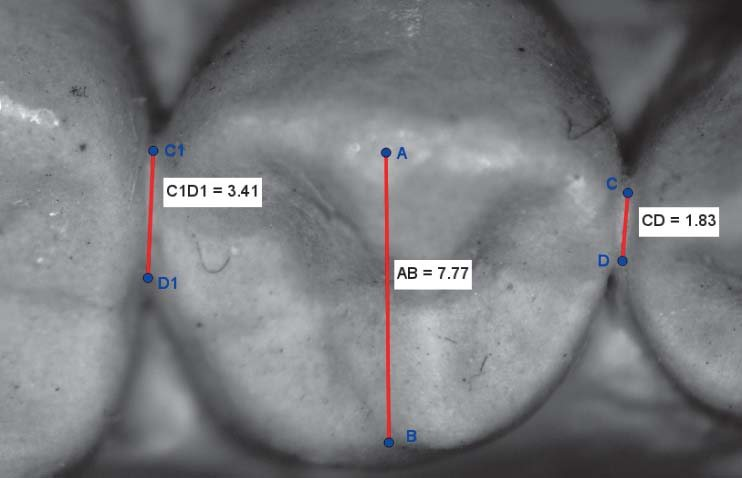
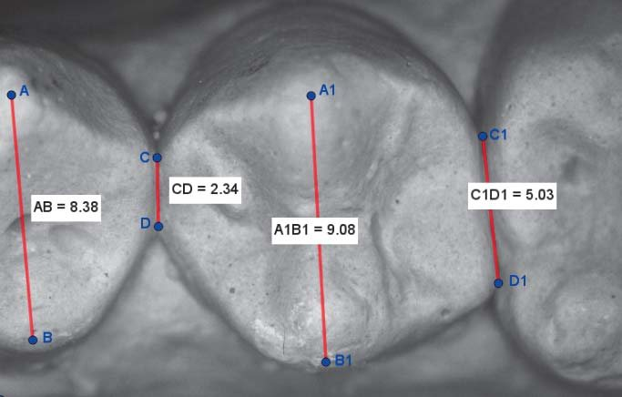
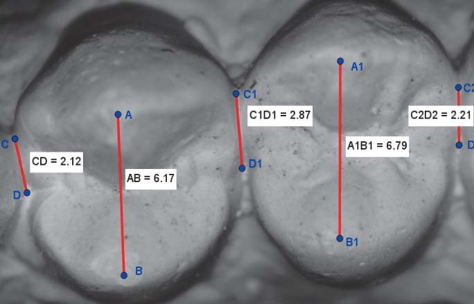
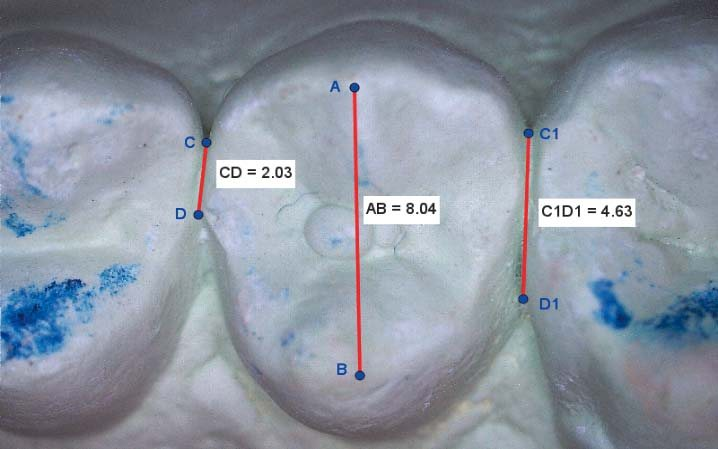
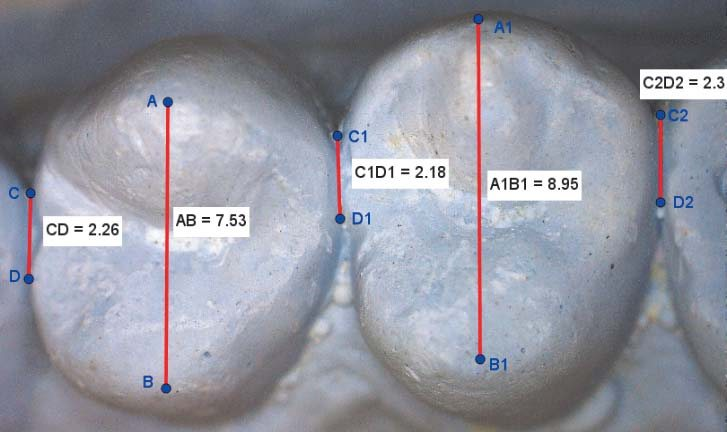
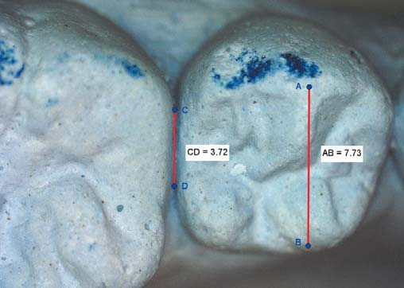
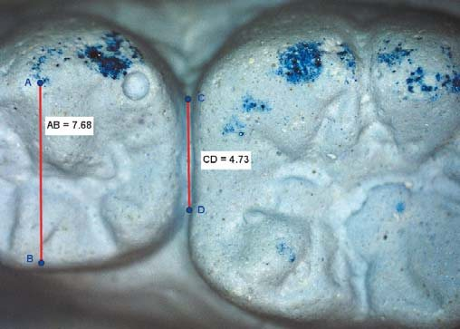

Наука · журнал «ДентАрт» 2019 №1
Комп’ютерна геометрична морфометрія бічних зубів
COMPUTER GEOMETRIC MORPHOMETRY OF LATERAL TEETH
Олександр Постолакі,ДУМФ ім. Ніколає Тестеміцану (м. Кишинів, Республіка Молдова)
Відновлення анатомічної форми і контактних поверхонь природних зубів або моделювання штучних коронок – надзвичайно важливе завдання в їх подальшій інтеграції та відновленні безперервності зубних рядів і оклюзійних контактів у функціональному плані. Мета дослідження полягала у вивченні кутових, лінійних, геометричних параметрів бічних зубів для вдосконалення діагностики, планування та експертної оцінки реставрації зубів (прямим або непрямим методом) із застосуванням цифрової візуалізації і вимірювання об’єктів на зображеннях. У статті подано результати комп’ютерної морфометрії бічних зубів на діагностичних гіпсових моделях щелеп, отриманих у студентів-добровольців обох статей у віці 22-26 років з нейтральним прикусом, без клінічно виражених оклюзійних і естетичних порушень.
Математика для вченого – те саме, що скальпель для анатома.Нільс Абель (1802-1829)
Актуальність теми
Широке впровадження у стоматологію реставраційних матеріалів і різних методик для прямого або непрямого відновлення анатомічної форми і функції зубів дало можливість лікарям і зубним технікам розвивати індивідуальний підхід у моделюванні. Однак аналіз літератури засвідчує, що в різних країнах зберігаються високі показники ураженості карієсом і його ускладненнями серед осіб молодого віку. До одного з таких уражень належать і оклюзійні порушення, викликані безпосередньо самим захворюванням, або ті, які є результатом ятрогенного чинника.
Так, В. П. Якушечкіна (2003) акцентує увагу на досить серйозній проблемі – крайовому приляганні композитних матеріалів до тканин зуба, особливо при пломбуванні порожнин класу II за Блеком. Авторка визначила основні помилки і ускладнення при пломбуванні проксимальних порожнин жувальних зубів: 1) карієс навколо пломби у проксимальній зоні – 93%; 2) наявність навислого краю пломби – 27,7%; 3) відсутність контактного пункту – 16%.1
За даними Д. А. Миколаєва (2015), проведений комплексний аналіз 583 композитних реставрацій постійних зубів у порожнинах класу II за Блеком, виготовлених із застосуванням традиційних методик і технологій, засвідчив низьку ефективність цього виду стоматологічної допомоги. У цілому клінічним вимогам тією чи іншою мірою не відповідала абсолютна більшість досліджених реставрацій – 95,2±0,88% (р<0,05). Протягом першого року «служби» дефекти виявлено у 84,0±7,3% реставрацій. У реставрацій, що мають «вік» понад два роки, цей показник досяг 97,4±1,47%.2
Ф. Х. Бештокова (2010) у своїй роботі подає відомості про високу поширеність дефектів оклюзійної поверхні бічних зубів – 98,46% (128 зі 130 осіб). Найчастіше локалізацією дефектів твердих тканин є оклюзійна поверхня — 68,02%.3
Є. А. Брагін, А. В. Хейгетян (2013) у своїй роботі посилаються на дані Long T. D., Smith B.G.N. (1988), які констатували 94% уражень контактних поверхонь бічних зубів з мезіально-оклюзійно-дистальними порожнинами (МОД) і 100% ушкоджень поверхонь зубів, препарованих під штучну коронку.4
О. В. Юріс (2015) повідомляє про обстеження населення Білорусі, проведене з метою встановлення ступеня поширеності порушень оклюзійних співвідношень зубів і зубних рядів. Аналіз результатів засвідчив високий ступінь поширеності патології (90,78±1,3% випадків), причому помічена тенденція до збільшення частоти порушень оклюзії з віком (після 30 років).5
А. Х. Хотайт, Є. В. Алейникова (2017) поставили за мету з’ясувати стан перших постійних молярів у 160 осіб (73 жін., 87 чол.) у трьох різних вікових групах: 1) 18-19 років – 31 чол.; 20-24 роки – 91 чол.; 3) 65 і старше – 38 чол. Було встановлено, що у молодих людей (18-19) перші моляри у 80,0% випадків не функціонують через значне руйнування коронки зуба у зв’язку з глибоким і ускладненим карієсом. У 20,0% випадків зуби в групу нефункціонуючих були зараховані у зв’язку з їх видаленням. У групі 20-24 років у результаті тих самих етіологічних факторів відсоток нефункціонуючих зубів становив 24,99%, у зв’язку з видаленням – 75,01%.6
А. В. Лепілін і співавт. (2010) провели огляд даних літератури з проблеми оклюзійних порушень зубів і зубних рядів і дійшли висновку, що оклюзійні і м’язові порушення є провідними в патогенезі та клініці м’язово-суглобової дисфункції.7
Донині відновлення дефектів коронок і зубних рядів, правильних оклюзійних співвідношень, оптимальних за площею фісурно-горбикових контактів і контактних пунктів залишається в реставраційній стоматології однією з найактуальніших проблем.5,8-11
С. Д. Арутюнов і співавт. (2009, 2010) використовували один з різновидів методу експертних оцінок — метод Дельфі, або метод анонімної багатоступінчастої експертизи розглянутої проблеми. За спеціально розробленим протоколом якість реставрацій оцінювали за 10-бальною шкалою 36 експертів – лікарів-стоматологів вищої категорії з практичним досвідом роботи не менше 10 років. Аналіз отриманих результатів засвідчив, що часто причиною низької якості реставрацій є неправильне формування оклюзійних поверхонь. Основні виявлені експертами причини: 1) відсутність попереднього визначення оклюзійних контактів до реставрації – 9,0±0,29 бала; 2) професійні характеристики лікаря (7,2±0,38 бала); 3) інструментальне оснащення (7,1±0,41 бала).12,13
Т. М. Єловікова, А. С. Кощєєв (2014) клінічно обстежили пацієнтів з прямими реставраціями бічних зубів з метою виявлення оклюзійних порушень. У 93,3% випадків визначено відхилення від «функціонально виправданої» форми жувальної поверхні зубів. Автори статті вважають, що при виконанні таких реставрацій слід звертати увагу на повноцінне відновлення анатомії зуба і візерунка жувальної поверхні – за умови дотримання технології реставрації.14
І. Ю. Пчелін і співавт. (2012) вважають, що площа оклюзійних контактів – один з об’єктивних критеріїв оцінки жувальної ефективності, який дає можливість зробити висновок про функціональну цінність різних видів виготовлених ортопедичних конструкцій. Автори пропонують методику вимірювання площі оклюзійних контактів у бічних відділах зубних рядів з використанням комп’ютерних програм.
О. А. Писаренко (2013) при обстеженні 122 школярів 9-11 класів м. Полтави (Україна) вивчала одонтогліфічні особливості зубів з проксимальним карієсом і встановила, що однаково були уражені всі групи постійних зубів на обох щелепах у випадках їх неправильної закладки, а також порушення прикусу. Наводяться дані Є. В. Боровського (1998) про те, що проксимальний карієс частіше виникає в зоні премолярів, різців та іклів. Цілком імовірно, така закономірність може спостерігатися в осіб без порушень у будові зубних рядів і прикусу.16
У Республіці Молдова в 2011-2014 рр. були обстежені 4673 пацієнти з обмеженими можливостями, у віці 1-18 років. Карієс зубів було встановлено у 79,40±0,84% дітей з обмеженими можливостями – у порівнянні зі здоровими дітьми 56,49+1,02% (t=17,32; p<0,001) з групи контролю.17
Oh S. H. і співавт. (2006) клінічно обстежили 20 молодих добровольців зі здоровим прикусом і вивчили взаємозв’язок між оклюзійними візерунками на жувальній поверхні бічних зубів і щільністю міжзубних проксимальних контактів під час стиснення (50% від максимального рівня скорочення в центральній оклюзії) між премоляром і першим моляром з лівого боку. Було встановлено, що площа і розташування оклюзійних контактів впливає на щільність міжзубних проксимальних контактів при стисканні зубів у центральній оклюзії.18
Dorfer C. E. і співавт. (2000) провадили систематичне дослідження міцності проксимального контакту в повних природних зубних рядах у 30 дорослих (25,3+/-3,0 роки), а також проаналізували її залежність від типу зуба, розташування зубів, жувальних зусиль і змін протягом дня. Був зроблений висновок про те, що проксимальна сила контакту значною мірою залежить від місця розташування, типу зуба, жування і часу дня.19
Є. А. Буличова і співавт. (2013) зазначають, що при моделюванні штучних коронок важливо врахувати площу і рівень розташування міжзубних контактних пунктів.20
П. Т. Гарєєв (2013) за допомогою комп’ютерних апаратів електроміографії «Bio ENG III» фірми Bio RESEARCH (США) та оклюзіографії «T-scan III» фірми Tekscan (США) обстежив 60 добровольців обох статей віком 18-30 років (2 групи по 30 чол.): 1) з інтактними зубними рядами або реставраціями, які не порушують оклюзійних контактів, і з основними ознаками нейтрального прикусу); 2) з дефектами або повною відсутністю оклюзійної поверхні премолярів або з іншою причиною відсутності антагонування в цій групі зубів. Автор встановив, що втрата морфології оклюзійної поверхні премолярів призводить до перебудови в нейром’язовому апараті, яка супроводжується формуванням нової, нефізіологічної моделі функціонування зубощелепної системи.21
Один з актуальних наукових напрямків пов’язаний з удосконаленням ортопедичного лікування хворих з дефектами зубів і зубних рядів незнімними протезами шляхом запобігання помилкам на його підготовчому і основних етапах. У ході аналізу отриманих результатів виявлено досить вільну форму ставлення стоматологів-ортопедів та зубних техніків до моделювання дуже важливої у функціональному плані контактної поверхні штучних коронок.22
Р. А. Розов (2009), ведучи клінічний аналіз віддалених результатів протезування керамічними і металокерамічними ортопедичними конструкціями, доходить висновку, що «наявні на службі стоматології засоби і методи оцінки незнімних протезів і їх співвідношень з тканинами протезного ложа (електромагнітна товщинометрія, функціональні проби, полярографія, доплерографія, ехоостеометрія, реографія, імунологічні, гістохімічні та ін.) не дозволяють їх широко застосовувати в практичній охороні здоров’я і є прерогативою наукових досліджень у НДІ, НДЦ, лабораторіях, на кафедрах вузів».23
У літературі звертається увага на той факт, що на сучасному етапі подальший розвиток нормальної морфології та патології людини потребує широкого застосування морфометричних підходів і методів математичного аналізу для об’єктивізації діагностичного процесу, зменшення частки суб’єктивізму і значущості особистісних факторів у процесі лікування. Доречно підкреслити, що кількісні методи як об’єктивніші і точніші, ніж якісні, базуються не лише на інструментальній оцінці ознаки, а й на даних апаратури, що реєструє і повністю усуває суб’єктивізм дослідника.24
Мета дослідження полягає у вивченні кутових, лінійних, геометричних параметрів бічних зубів і вдосконаленні діагностики, планування та експертної оцінки із застосуванням цифрових методів візуалізації та вимірювання об’єктів на зображеннях.
Матеріали і методи
Клініко-інструментальним методом було обстежено 20 студентів-добровольців стоматологічного факультету ДУМФ ім. Ніколає Тестеміцану обох статей, віком 22-26 років, з нейтральним прикусом, без клінічно виражених оклюзійних та естетичних порушень. За отриманими відбитками були виготовлені гіпсові моделі щелеп. Звертали увагу на оклюзійні співвідношення, особливості морфології бічних зубів і міжзубних контактів. Для морфометрії на цифрових фотографіях бічних зубів була використана комп’ютерна програма і авторська автоматизована модель-шаблон. У ній вивчалися кілька параметрів: 1) лінійні і кутові значення міжзубних контактів у зоні перших молярів; 2) лінійне співвідношення між міжзубними контактами і вестибуло-оральними розмірами оклюзійної поверхні премолярів і перших молярів; 3) геометрична форма і кутові параметри міжзубних контактів у зоні перших молярів.
Предметом морфології людини і тварин є закономірності індивідуальної мінливості статевих і вікових особливостей будови організму. Морфологія досліджує зміни в будові організму на всіх рівнях його структурної організації при різних порушеннях функцій, патологічних процесах і хворобах.24
Однією з наукових дисциплін, що розробляють методи вивчення біологічних об’єктів і активно розвиваються в наш час, є геометрична морфометрія. Геометричний підхід, націлений саме на порівняння форм як таких, веде початок від піонерських досліджень Д’ Арсі Томпсона (1917), який уперше використав трансформаційну решітку для ілюстрації взаємоперетворення різних форм.
Передумови для розвитку наукових основ теорії визначення форми, розмірів і положення об’єктів за їх перспективними зображеннями були закладені ще в епоху Відродження роботами Альберті (1511), Дюрера (1525), Дезарга (1636). У 1839 р. французький учений Ж. Даггер запропонував фіксувати оптичне зображення, що отримується в камері-обскурі, не графічно на папері, а фотографічним способом. Із середини XIX століття почалися перші досліди із застосування фотографічних зображень для складання архітектурних креслень. Якщо для отримання характеристик сфотографованого об’єкта використовуються властивості одного знімка, то такий метод вимірювань називають фотограмметричним. Згодом застосування фотографії для вивчення геометричних і фізичних властивостей об’єктів розділилося на три основних напрямки, які одержали свої назви в залежності від способу отримання фотознімка – наземна, аеро- і космічна фотограмметрія.
Нині фотограмметрія – це наука, що вивчає дистанційні (безконтактні) способи визначення форми, розмірів і просторового розташування різних об’єктів шляхом вимірювання їх фотографічних зображень.25
У своєму розвитку сучасне природознавство проходить етап, коли одержувані факти необхідно передавати числовими показниками. Сутність явища пізнається найбільш широко і глибоко при цілеспрямованому вивченні якісних і кількісних показників. Відомо, що більшість якісних біологічних явищ не можуть бути некількісними, тому метричний (числовий) підхід до вивчення відповідних ознак цілком виправданий, хоча частина цих явищ потребує застосування методів неметричної математики. Математика – найпотужніший і найдосконаліший інструмент для вивчення якості явища, його сутності і універсальний спосіб для внесення уточнень, упорядкування нагромадженої інформації, оцінки достовірності отриманих висновків і закономірностей, для осмислення і короткої однакової форми вираження безлічі фактів і різних за своєю природою процесів.
Морфометрія – частина метрології (науки про вимірювання) – учення про правила застосування кількісних характеристик форм об’єктів. Як метод дослідження, вона почала застосовуватися кілька десятиліть тому: лише на початку 80-х рр. ХХ століття були сформульовані основні ідеї, що заклали її теоретичні основи.
На рубежі ХХ-ХХI століть у біології виникли принципово нові можливості роботи з об’єктами, засновані на комп’ютерних технологіях. З’явилася так звана комп’ютерна біологія – наука, яка оперує електронними зображеннями біологічних об’єктів, що фундаментально відрізняє цей новий напрямок від біоінформатики і математичного моделювання біологічних процесів.26
Сучасний морфометричний аналіз перейшов на новий рівень досліджень особливостей біологічних об’єктів за зображенням – у зв’язку з широкими можливостями цифрових способів створення, зберігання та аналізу інформації, отриманої за допомогою «геометричної морфометрії».
У стислому вигляді геометричну морфометрію можна визначити як спосіб, який описує конфігурацію морфологічних об’єктів у просторі, що дозволяє виключити вплив розмірів на результати аналізу. Вихідним описом морфологічного об’єкта в геометричній морфометрії є сукупність декартових координат і міток або напівміток (контурних точок) через відсутність чітких «прив’язок» на його поверхні, що дозволяє створювати геометричні образи (двомірні або площинні проекції об’ємних тіл), в які можуть бути втілені кількісні дані.28
Одним із поширених методів отримання метричних характеристик організації тканин, клітин та інших морфометричних структур на мікро- і макропрепаратах вважається «клітинний», або «сітковий», варіант планіметричного методу, але у своєму класичному вигляді він досить трудомісткий і вимагає спеціального інструментарію, а також великих витрат часу для аналізу.
Планіметрія – метод вимірювання площі об’єктів або геометричних фігур. Площу, займану на зрізі досліджуваної компоненти, визначають накладенням зверху квадратної сітки з відомим кроком поділів, потім підраховують число повних і неповних квадратів у межах контуру, займаного аналізованою структурою. Точність вимірювання залежатиме від кроку решітки – чим менший крок, тим вона вища.
Сьогодні особливого значення у морфометрії набули цифрові і комп’ютерні технології, що відкрили принципово нові можливості, які дозволяють провадити швидке отримання, передачу, обробку, аналіз і компактне зберігання досліджуваних зображень об’єктів протягом тривалого часу.26-28
До планіметричного методу в стоматології можна зарахувати відомий метод визначення індексу руйнування оклюзійної поверхні (ОП) зубів (ІРОПЗ). Методику визначення ІРОПЗ запропонував проф. В. Ю. Мілікевич у 1984 р. Для визначення площі ОП потрібно: отримати відтиск із зубного ряду, виготовити діагностичну модель із супергіпсу, стандартною пластмасовою пластинкою з нанесеною міліметровою сіткою провести вимірювання ОП, виміряти площу дефекту твердих тканин або пломби (вкладки) і обчислити індекс як відношення площі дефекту (пломби, вкладки) до площі ОП, приймаючи її за одиницю. Для полегшення проведення і підвищення точності визначення ІРОПЗ автори рекомендують використовувати спеціальний прилад – полярний планіметр. Подано відомості про вдосконалення цієї методики, в тому числі із застосуванням інтраоральної камери і комп’ютера, що швидше і менш утомливо. Зазначається, що застосування комп’ютерних технологій при діагностиці є досить перспективним напрямком.29

У рекламному проспекті CAD/CAM SIRONA CEREC (Німеччина) від 29.05.2018 р. вказано, що нове програмне забезпечення CEREC 4.5 дозволяє планувати реставрацію за сканованим відтиском, за допомогою функції дизайну «Biojaw» на основі біогенеричного моделювання, що має на увазі біостатичні обчислення для створення первинної моделі реставрації, яка відповідає, на переконання авторів, анатомії пацієнта і рідко вимагає яких-небудь доопрацювань. Ця умова забезпечує економію часу і дозволяє швидко перейти до завершального етапу виготовлення.30 Справді, ця перевага усуває класичні етапи, що проводяться в зуботехнічній лабораторії. Однак це означає, що дизайн за «Biojaw» передбачає середньоанатомічний варіант майбутньої реставрації.
М. С. Мірзоєва (2017) вивчила добірку з одинадцяти літературних джерел, серед яких два літературних огляди і один метааналіз в кількох базах даних: Pub Med, Сyberleninka, eLIBRARY, каталог дисертацій і авторефератів з медицини, опублікованих за останні 30 років. Головні теми відібраних матеріалів присвячені: 1) історії розвитку CAD/CAM систем; 2) порівнянню сучасних CAD/CAM систем і оцінці точності кожної системи у порівнянні з традиційними методами протезування. «Регулярні вимірювання точності і достовірності різних CAD/CAM систем свідчать про те, що навіть у наші дні важко знайти «золотий стандарт», зразкову сканувальну систему». До того ж слід враховувати різний рівень складності у використанні, час на навчання і високу вартість обладнання.31
Таким чином, без застосування принципів індивідуалізації, до яких належать не тільки форма, розміри коронки зуба, колір, а й особливості оклюзійної поверхні з урахуванням расово-етнічних відмінностей, досягти найбільшої природності і функціональної ефективності штучних зубів неможливо. Це доводять з різних позицій результати низки наукових досліджень, згаданих нижче.
У той же час залишається поза увагою не менш важливий аспект обговорюваної проблеми. Комп’ютерні методи фрезерування в стоматології рекламуються як вступ у нову, «цифрову» еру, з усіма наслідками, що випливають, запаморочливими перспективами в майбутньому, з чим не можна не погодитися. Але, з другого боку, певною мірою ця модна технологія «розв’язує руки» недобросовісному лікареві, який має погане уявлення про анатомо-гістологічні особливості будови і фізіологічні процеси, що відбуваються в зубах, а відтак ще менше розуміє механізм патофізіологічних реакцій і характер перебігу репаративних процесів у зубних тканинах після інструментального втручання. Сюди слід додати і відсутність потреби у щадному препаруванні, оскільки «розумна» машина далі все зробить сама. Не будемо торкатися в цих міркуваннях й інших напрямків сучасної стоматології, але створюється враження, що подібний сплеск захоплення технократичними методами лікування в подальшому призведе, у певному сенсі, до перенасичення ними. І з часом спливуть на поверхню всілякі недоліки і негативні наслідки такого підходу і його нерозумного застосування, частину з яких нескладно передбачити, а про інші, можливо, ми навіть і не здогадуємося. І у фіналі цієї драматичної історії все повернеться до того, що найціннішим буде сказане пацієнтові слово лікаря і найправильнішим та найнадійнішим – точне око і вміла рука майстра-реставратора.
Результати та обговорення
Математичний аналіз власних результатів дослідження засвідчив, що співвідношення між найбільшими вестибуло-оральними розмірами жувальної поверхні коронок і міжзубних контактів, від ікла до першого моляра на обох щелепах, перебуває у широкому діапазоні 25-55±2-3%. На нашу думку, основними факторами, які впливають на ці показники, є розмір, форма і топографія зубів (фото 1).
На першому етапі були обрані фотографії перших молярів верхньої і нижньої щелепи, які візуально близькі за формою. Після лінійних і кутових вимірів дійшли висновку, що на різницю значень впливають окремі малопомітні параметри форми, топографія і протяжність міжзубних проксимальних контактних пунктів (майданчиків) (фото 2).








На другому етапі дослідження було відібрано по 10 фотографій перших молярів верхньої і нижньої щелепи з різною формою зубної коронки і проведено 80 (40+40) кутових вимірювань між площиною, що проходить через міжзубні проксимальні контакти, і контурами проксимальних поверхонь мезіальної і дистальної частини коронок перших молярів: 1) мезіально-вестибулярний; 2) дистально-вестибулярний; 3) мезіально-(піднебінний)-язичний; 4) дистально-(піднебінний)-язичний.
Для першого моляра верхньої щелепи:
- Мезіально-вестибулярний кут. Від 18,59 до 57,83°. Різниця 39,25°.
- Дистально-вестибулярний. Від 15,83 до 32,53°. Різниця 16,7°.
- Мезіально-піднебінний. Від 16,01 до 28,78°. Різниця 12,8°.
- Дистально-піднебінний. Від 16,76 до 38,71°. Різниця 21,95°.
Для першого моляра нижньої щелепи:
- Мезіально-вестибулярний кут. Від 26,8 до 43,9°. Різниця 16,2°.
- Дистально-вестибулярний. Від 26,98 до 47,69°. Різниця 20,7°.
- Мезіально-язичний. Від 8,51 до 20,84°. Різниця 21,35°.
- Дистально-язичний. Від 13,7 до 31,92°. Різниця 18,2°.
Аналіз одержаних даних засвідчив, що на першому молярі верхньої щелепи найбільша різниця між крайніми кутовими значеннями – у зоні мезіально-вестибулярного кута, а потім дистально-піднебінного.


На першому молярі нижньої щелепи одержано протилежні параметри. Найбільша різниця була між крайніми кутовими значеннями в зоні мезіально-язичного кута, а потім дистально-вестибулярного. Імовірно, така варіабельність у цих горбиків пов’язана з особливостями редукційних змін, що відбуваються у сучасної людини, і біомеханікою жувального апарату.
На продовження теми згадаємо цікавий факт. Встановлено, що візуальне відображення у вигляді малюнків, схем, фото, рентгенограм і т. д. служить не тільки додатковою системою кодування інформації, а й важливим описовим методом. Штучні візуальні системи багаторазово перевищують здатність інших сенсорних систем, разом узятих, оперувати і обробляти отриману інформацію. Кодування інформації у двомірних або тривимірних формах дозволяє побачити взаємозв’язки, які неможливо уявити.32
С. Д. Арутюнов і співавт. (2009, 2010) підкреслюють, що комплексне лікування передбачає відновлення не лише окремого зуба, але функції зубного ряду в цілому. Ігнорування цього фактора обов’язково призводить до різних ускладнень: відколу частини реставрації, відколу стінки зуба, відколу коронкової частини зуба разом із реставрацією, поздовжнього розколу кореня, функціонального перевантаження зуба, що стоїть поодиноко, збільшення рухливості зуба, болю при накусуванні та ін.12,13
Застосування комп’ютерних апаратів для електроміографії та оклюзіографії дозволило П. Т. Гарєєву (2013), крім зазначених вище результатів, виявити і підтвердити гіпотезу про наявність фізіологічної відособленості премолярів верхньої і нижньої щелеп. Як визначив Гарєєв, вона полягає в тому, що в межах оклюзійної поверхні премолярів є так звана «вісь дроблення», а самі зуби є своєрідними «сенсорними перемикачами» між фронтальними зубами і молярами. Отже, «вісь дроблення – це контактні зони на премолярах, при взаємодії яких у різних стадіях формування максимального міжгорбикового контакту відбувається координація нейром’язової активності».21
Деякі автори зазначають, що у спеціальній літературі велике місце відводилося і відводиться особливостям моделювання анатомічної форми штучних коронок і зубів, але в основному акцентується на вестибулярній і оклюзійній поверхнях зубних протезів.22,23
Незважаючи на це, проблеми з моделюванням у практиці зберігаються, і цій темі присвячена велика кількість публікацій.1-3;8-10;12-14;23 Так, наприклад, Є. Ю. Єрмак і співавт. (2006) подають результати біометричних досліджень оклюзійних контактів жувальних зубів у нормі і за наявності пломб із цементів та композитних матеріалів. «Аналіз отриманих даних дозволив зробити висновок про зменшення площі контактних пунктів на зубах, які мають прямі реставрації».33
І. М. Макєєва і співавт. (2017) провели дослідження соматично здорових молодих мешканців м. Москви у віці 25-34 років з наявністю повного зубного ряду і без патології в тканинах пародонту, оклюзійний клас I за класифікацією Енгля, із застосуванням електроміографічного методу і дійшли висновку, що «мінімальні зміни морфології коронкової частини зубів призводять до змін біоелектричної активності жувальних м’язів, дисбалансу в нейром’язовій системі людини. Чим більші кількісні і якісні зміни коронки зуба, тим істотніші зміни в жувальних м’язах».34
Отже, потрібно передусім навчитися визначати оклюзійні дисфункції клінічно, на що ми звертали увагу в попередніх статтях, зокрема шляхом проведення спеціальної ортопедичної диспансеризації – планового діагностичного заходу, спрямованого на раннє виявлення у осіб молодого віку прихованих клінічних симптомів хвороби і їх усунення прямим чи непрямим мінімально інвазивним методом або їх комбінуванням (прямим і непрямим).
Наприклад, Ю. В. Мандра, Г. І. Ронь (2011) розробили малоінвазивний спосіб лікування ранньої стадії підвищеного стирання зубів, який передбачає мінімальне препарування і естетико-функціональну реставрацію дефекту нанонаповненими композитами, що дозволило підвищити збереження пломб протягом 3-річного спостереження до 95,3 ±1,6%.35
Є. Х. Абдразаков і співавт. (2016) провели комплексне обстеження анатомо-топографічних особливостей будови зубів 36, 46 у осіб російської і казахської національності серед 1000 школярів і студентів віком 16-22 років. Була встановлена ураженість зубів карієсом і некаріозними ураженнями, зубощелепними аномаліями зубів і зубних рядів у 78% випадків. У 22% обстежених з ортогнатичним прикусом були виявлені інтактні зубні ряди з чіткими одонтологічними ознаками. Автори дійшли такого висновку: «Рельєф зубної коронки має своєрідну топографічну структуру і виразно виражену расово диференційовану специфічність у різних етнічних групах».36
Є. А. Буличова і співавт. (2013) повідомляють, що при моделюванні зустрічних контактних поверхонь штучних коронок вони дотримувалися рекомендацій В. Н. Трезубова та ін. (2007): «Оптимальною слід вважати протяжність контактного майданчика у осіб середнього і літнього віку близько 40-50% вестибуло-орального розміру зуба. Тобто: CD 1/2AB. Для пацієнтів молодого віку це співвідношення дорівнює приблизно 30-40%».20
Висновки
Таким чином, принципово важливо в кожному індивідуальному випадку визначати тип прикусу, расово-етнічні особливості морфології зубів і топографію міжзубних проксимальних контактних пунктів (майданчиків), роблячи порівняльний аналіз на обох боках щелеп, вивчати оклюзійні співвідношення в статиці і динаміці (передній, бічній правій і лівій позиціях оклюзії), застосовувати комп’ютерний морфометричний аналіз і кутові вимірювання для досягнення максимального відновлення анатомії, функції та естетики.
Література
- Якушечкина Е. П. Повышение эффективности восстановления контактного пункта жевательной группы зубов. Дис. ... канд. мед. наук. – Тверь. 2003, 116 с.
- Николаев Д. А. Диагностика и лечение кариеса контактных поверхностей жевательных зубов: клинико-лабораторное исследование. Автореф. дис. ... канд. мед. наук. – Тверь, 2015, 18 с.
- Бештокова Ф. Х. Сравнительная оценка эффективности восстановления разрушенной окклюзионной поверхности боковых зубов. Автореф. … канд. мед. н. Ставрополь, 2010.
- Брагин Е. А., Хейгетян А. В. Частота встречаемости кариеса контактных поверхностей боковых зубов (II класс по Блэку) по данным панорамной томографии // Кубанский научный медицинский вестник. – 2013. – № 6. – С. 42-45.
- Юрис О. В. Нарушение окклюзионных взаимоотношений среди населения Республики Беларусь и факторы риска, обуславливающие проблему // Вестник ВГМУ. – 2015. – № 6. – С. 112-119.
- Хотайт А. Х., Алейникова Е. В. Состояние первых постоянных моляров у людей разных возрастных групп // Медицинский журнал (Минск, Беларусь). – 2006. – №4. – 120 с.
- Лепилин А. В., Коннов В. В., Багарян Е. А., Арушанян А. Р. Клинические проявления патологии височно-нижнечелюстных суставов и жевательных мышц у пациентов с нарушениями окклюзии зубов и зубных рядов // Саратовский научно-медицинский журнал. – 2010. – №2.
- Рябов С. В., Мурзова Т. В. Изучение факторов окклюзии с целью повышения качества ортопедического лечения // Здоровье и образование в XXI веке. – 2012 – №10. – С. 320-321.
- Ершов П. Э. Восстановление окклюзионной поверхности несъемных протезов с учетом возраста пациента // Соврем. технол. мед. – 2010. – №1. – С. 60-64.
- Смотрова А. Б. Клинический анализ окклюзионных контактов при прямой и непрямой реставрации зубов жевательной группы. Автореф. … канд. мед. наук. – М. – 2012. – 21 с.
- Окклюзия и клиническая практика / Под ред. И. Клинеберга, Р. Джагера. Пер. с англ. Под общ. ред. М. М. Антоника. – 2-е изд. – М.: МЕДпресс-информ. – 2008. – 200 с.
- Арутюнов С. Д., Кицул И. С., Ониашвили М. Н., Зотов П. П., Диханова В. Г., Бокучава Э. Г. Разработка критериев качества прямой реставрации зубов // Сибирский медицинский журнал (Иркутск). – 2009. – vol. 90. – № 7. – С. 57-159.
- Арутюнов С. Д., Кицул И. С., Вартанов Т. О., Зотов П. П. Разработка критериев качества реставрации разрушенных зубов на основе экспертных оценок. Актуальные вопросы развития профилактической медицины и формирования здорового образа жизни: сб. науч. ст. Т. 2. / Под ред. А. Е. Агапитова. Иркутск: РИО ИГИУВа. – 2010. – 188 с.
- Еловикова Т. М., Кощеев А. С., Мафиеня Е. С. Прямые реставрации зубов как фактор возникновения окклюзионных нарушений и заболеваний пародонта // Проблемы стоматологии. – 2014. – №4. – С. 15-20.
- Пчелин И. Ю., Буянов Е. А., Дьяков И. П., Деревянченко Н. И., Фирсов Д. В., Шемонаев В. И. Методика измерения площади окклюзионных контактов боковых зубов с использованием компьютерных программ // Волгоградский научно-медицинский журнал. – 2012. – №1(33). – С. 40-43.
- Писаренко Е. А. Характеристика апроксимального кариеса с позиции одонтоглифики // Вісник проблем біології і медицини. – 2013. – №3. – С. 327-329.
- Spinei A. Morbiditatea prin caria dentara si accesai la tratamentul stomatologic al copiilor cu dizabilitati in Republica Moldova. Revista Romana de Medicina Dentara. 2015, №3, рр. 170-198.
- Oh S. H., Nakano M., Bando E., Keisuke N., Shigemoto S., Jeong J. H., Kang D. W. Relationship between occlusal tooth contact patterns and tightness of proximal tooth contact. J. Oral Rehabil. 2006 Oct;33(10):749-53.
- Dorfer C. E., von Bethlenfalvy E. R., Staehle H. J., Pioch T. Factors influencing proximal dental contact strengths. Eur. J. Oral Sci. 2000 Oct;108(5):368-77.
- Булычева Е. А., Чикунов С. О., Алпатьева Ю. В. Разработка системы восстановительной терапии больных с различными клиническими формами заболеваний височно-нижнечелюстного сустава, осложненных мышечной гипертонией (часть III) // Институт стоматологии. – 2013. – № 2(59). – С. 44-45.
- Гареев П. Т. Роль премоляров в формировании нейромышечно-окклюзионного равновесия. Автореф. дис. ... канд. мед. наук. – М. – 2013. – 24 с.
- Петраков Д. С. Ретроспективная оценка качества планирования и проведения ортопедического лечения несъемными зубными протезами. Автореф. дис. ... канд. мед. наук. – М. – 2008. – 17 с.
- Розов Р. А. Клинический анализ отдаленных результатов протезирования керамическими и металлокерамическими ортопедическими конструкциями. Автореф. дис. ... канд. мед. наук. – С.Пб. – 2009. – 211 с.
- Автандилов Г. Г. Медицинская морфометрия. Руководство. – М. Изд-во Медицина. – 1990. – 384 с.
- Бруевич П. Н. Фотограмметрия: Учеб. Для вузов. – М. Изд-во «Недра». – 1990. – 285 с.
- Гостев И. М. Применение методов обработки изображений в компьютерной биологии // Вестник РУДН. Серия: Математика, информатика, физика. – 2012. – №1. – С. 44-49.
- Павлинов И. Я., Микешина Н. Г. Принципы и методы геометрической морфометрии // Журн. общей биол. – 2002. – Т. 63. – № 6. – С. 473-493.
- Павлинов И. Я., Микешина Н. Г. Принципы и методы геометрической морфометрии // Журн. общей биол. – 2002. – Т. 63. – № 6. – С. 473-493.
- Клемин В. А., Борисенко А. В., Ищенко П. В. Комбинированные зубные пломбы. Пластическая реставрация зубов комбинированными восстановительными конструкциями. М. ООО «Медицинское информационное агентство». – 2008. – 304 с.
- CAD/CAM SIRONA CEREC (Германия). http://carolinaspb.ru/wp-content/uploads/2018/07/CAD-CAM-klinicheskiy-Sirona-CEREC – 1. – 2018.
- Мирзоева М. С. Использование сканирования в ортопедической стоматологии – обзор литературы // Проблемы стоматологии. – 2017. – № 1. – С. 31-34.
- Пайтген Х.-О., Рихтер П. Х. Красота фракталов. – М. Изд-во «Мир». – 1993. – 176 с.
- Ермак Е. Ю., Долгих И. М., Парилов В. В. Биометрическая характеристика окклюзионных контактов жевательных зубов в норме и при наличии пломб из пластических материалов // Acta Biomedica Scientifica. – 2006. – № 2. – С. 167-170.
- Макеева И. М. Влияние морфологии зубов на биоэлектрическую активность жевательных мышц / И. М. Макеева, Я. В. Самохлиб, Н. Ж. Дикопова // Стоматология. – 2017. – Т. 96. – № 3. – С. 18-22.
- Мандра Ю. В., Ронь Г. И. Пути повышения эффективности лечения ранней стадии повышенной стираемости зубов // Проблемы стоматологии. – 2011. – № 3. – С. 18-21.
- Абдразаков Е. Х., Досбердиева Г. Т., Дюсенова А. Ж., Оразымбет А. Б., Сарыбаева А. А., Хуандых А., Дaулет Ж. К. Индивидуальный подход при восстановлении 36, 46 зубов с учетом особенностей анатомического рельефа у лиц различных этнических групп населения Казахстана // Вестник Казахского национального медицинского университета. – 2016. – №1. – С. 315-318.